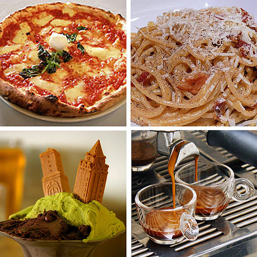

Italian Cuisine
The history of italian cuisine is one rife with taste. From pasta to pizza, we want to share with you just one of the fascinating worlds of mediterranean food!
Italian food, in general, is usually made up of few but qualitative ingredients (Auguste Escoffier School Of Culinary Arts, 2023), such as tomato sauces, cheese, herbs and flour.
Image from Wikipedia
References:
html list code in this commit adapted from this site:
https://www.w3schools.com/
Auguste Escoffier School Of Culinary Arts (2023) "A Guide to Italian Cuisine: Its History, Flavors, and Influence on American Cooking". Available at: https://www.escoffier.edu/blog/world-food-drink/a-guide-to-italian-cuisine/. (Accessed: 30th April 2025).
Wikipedia (2025) "Marinara sauce". Available at: https://en.wikipedia.org/wiki/Marinara_sauce. (Accessed: 30th April 2025).
Authentica World Cuisine (2025) "Tomatoes in History". Available at: https://authenticaworldcuisine.com/a-tomatos-journey/. (Accessed: 30th April 2025).
Wikipedia (2025) "Italian cuisine". Available at: https://en.wikipedia.org/wiki/Italian_cuisine. (Accessed: 30th April 2025).